Run: 20260925_2010_endurance_run -- 40m, direct USB Audio CODEC (Voicemeeter/CABLE bypassed for this arm)
Window (UTC): 2026-09-25T20:11:48Z -> 2026-09-26T08:11:48Z (12.0h)
Build: decoding_improvement@51e40b554366, shim 20260054, daemon v0.52, DLL SHA256 38a21f84…589a1cba, osd_nhard_max=40
Purpose (Captain, 2026-09-25): third leg of the endurance SNR-gap follow-up. The 2026-09-22 (Voicemeeter B1) -> 2026-09-23 (direct-CODEC) move (-2.824 -> -3.225 dB within-bin) was flagged, not ruled -- the standing note said to read it in WSJT-X-SNR bins and that "a second leg would settle it." The Captain chose direct-CODEC again for this leg, so this run repeats the SAME chain as 2026-09-23 on a different night -- the decisive comparison for telling a stable chain effect apart from ordinary night-to-night noise. Adoption gate for direct-CODEC as a default remains separately gated on #187/#188 staying resolved on the branch actually run (confirmed this session: decoding_improvement synced with main, both issues' fixes present, 51e40b55).
Generated: 2026-09-26T09:45:00Z (date -u, HK-017)
state.json / HANDOFF.md: phase DONE. supervisor.log: exactly one PRECHECK (all_pass: true, 11/11) and one WINDOW OPEN line between start and teardown. Zero restart or problem events for the full 12h -- the last heartbeat before teardown reads consecutive_restarts: 0, captureRestartCount: 0, watchdogRestartCount: 0.supervisor.log: "HK-019 orphan check: clean").D:\tmp-endurance-build, removed after use) rather than the standard w-di-run checkout, which was left untouched throughout per the Captain's own instruction (its mid-merge state is a separate, not-yet-resolved item -- see BOARD.md).Method: every one of the 2,884 15s/12kHz mono cycle WAVs in owsfz/wav/ read in full -- same method as every prior standardised run (spectrum_scan.py, this directory; full results: spectrum_scan.json).
| Check | Result |
|---|---|
| Files read / errors | 2,884 / 2,884 ok, 0 errors |
| Format consistency | fs=12000 and nframes=180000 on every file -- 100% consistent |
| Clipping (samples >= 32760) | 1 file (260926_064300.wav) -- isolated, 0.035% of the corpus, not investigated further at this size |
| Dropouts / saturation | 0 files either way |
| Level stability | median -28.18 dBFS, MAD 0.80 dB, range -41.04 to -22.66 dBFS -- no gain steps, no drift |
| Sub-passband hum (45-65/95-125 Hz) | median 21.9 dB over the near-Nyquist floor -- consistent with the 20260923 report's own control finding that this elevation predates the chain change and is not attributable to bypassing Voicemeeter; not re-derived here, cited from that established result |
| In-band spur candidate | dominant peak 1435 Hz, 204/2,884 files (7.1%) by the scan's own binning |
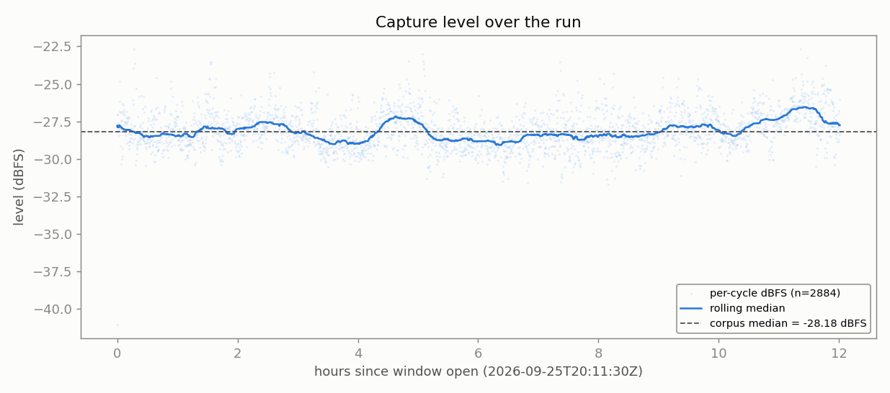
No gain steps, no dropouts, no drift -- the rolling median stays within a tight band around the corpus median for the entire window.
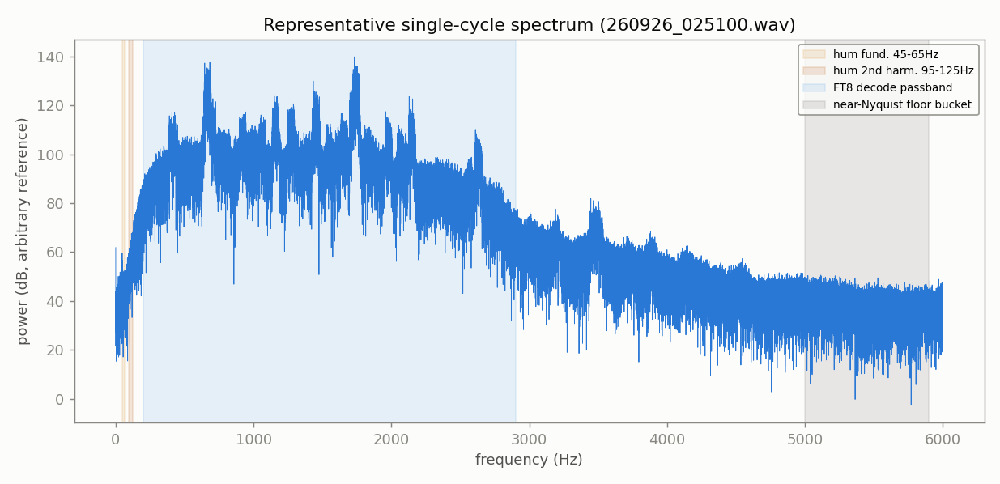
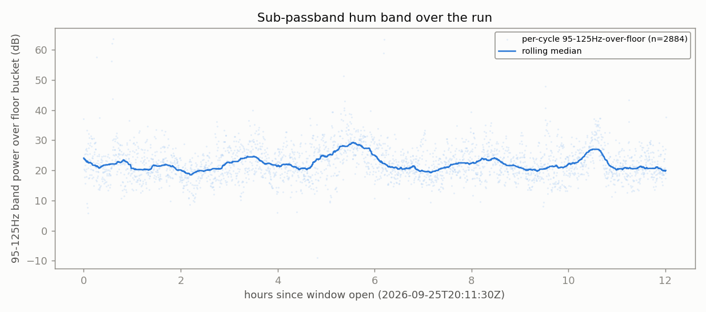
Already established (20260923 report) as predating the direct-CODEC chain change -- not re-derived here, cited from that result.
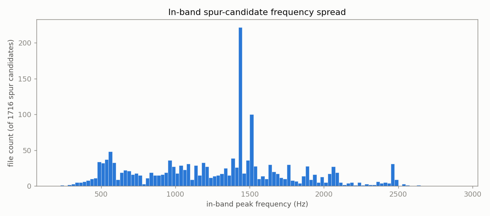
spectrum_scan_report.py's cross-reference against owsfz/ALL.TXT (aggregates only, NFR-021 -- no callsign or message text reproduced):
findings.json): "RESOLVED: real station traffic, not a hardware/decoder artefact."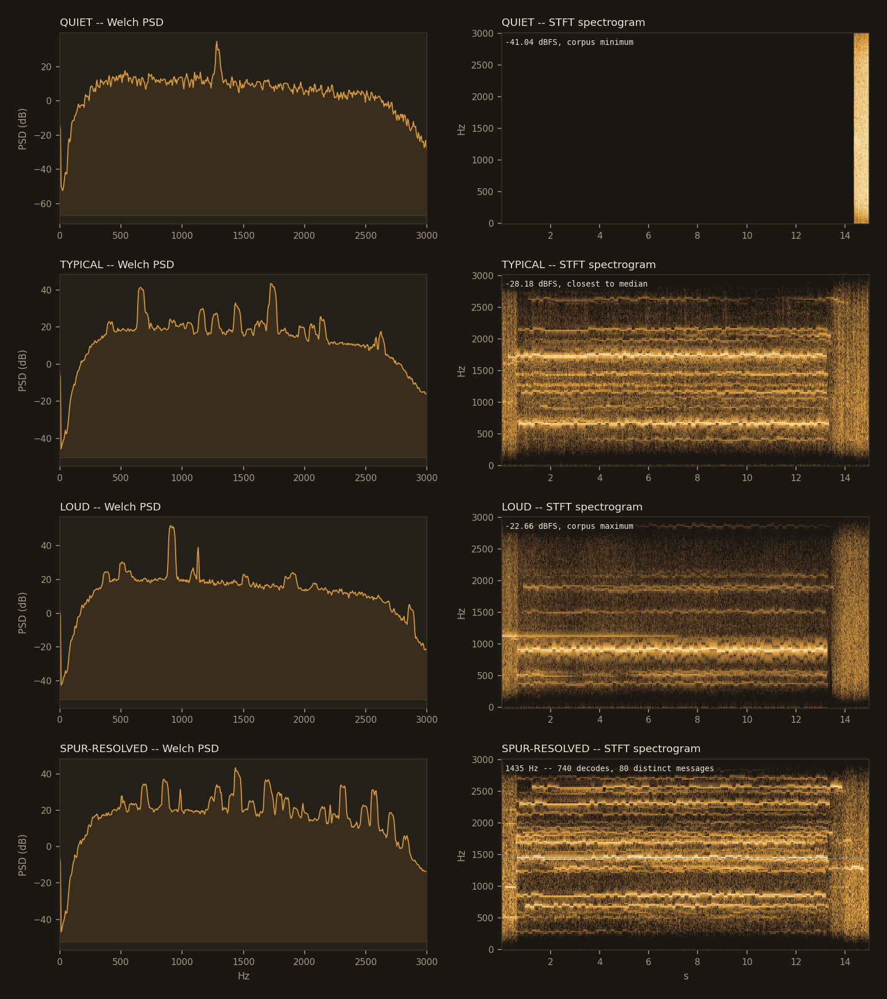
Overall: one isolated clipped file (1/2,884) aside, no spectral anomaly attributable to this run or to the direct-CODEC chain. The hum signature is already established as chain-independent; the one prominent in-band peak is a confirmed real station.
Full content of this run's own anova_report.md, inline -- not a separate file to cross-reference.
| appraiser | unique ts | on-grid | G | row | verdict |
|---|---|---|---|---|---|
| OpenWSFZ | 2880 | 2880 | 1.0000 | ROW 1 | PASS |
| WSJT-X | 2880 | 2880 | 1.0000 | ROW 1 | PASS |
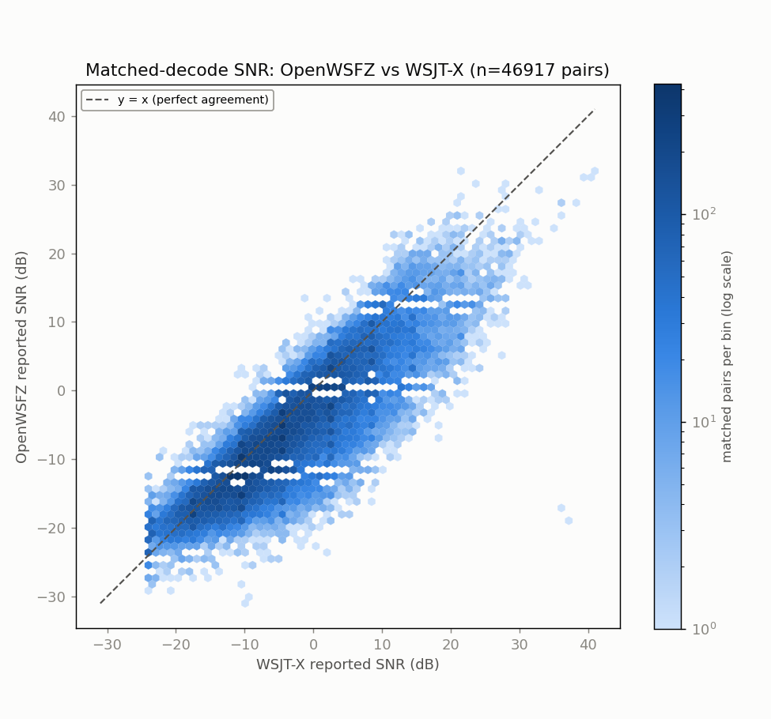
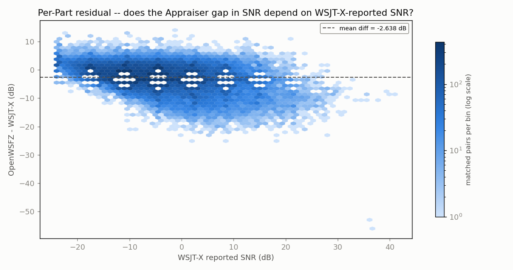
| Source | SS | df | MS | F | P |
|---|---|---|---|---|---|
| Part | 7187299.1752 | 46916 | 153.1951 | 13.944 | 0.0000 |
| Appraiser | 163296.0998 | 1 | 163296.0998 | 14863.463 | 0.0000 |
| Residual (confounded with interaction, n=1/cell) | 515438.4002 | 46916 | 10.9864 | ||
| Total | 7866033.6752 | 93833 |
Appraiser means (SNR, dB): OpenWSFZ -6.409 dB, WSJT-X -3.771 dB, grand mean -5.090 dB.
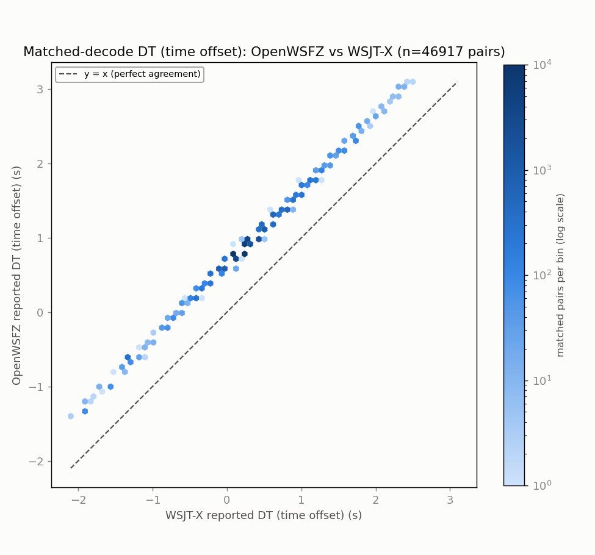
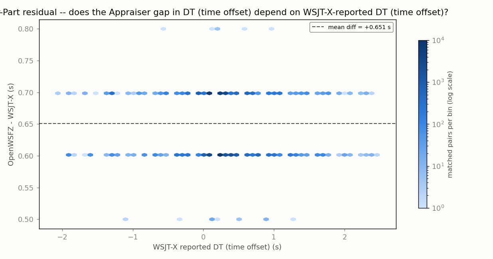
| Source | SS | df | MS | F | P |
|---|---|---|---|---|---|
| Part | 12683.2851 | 46916 | 0.2703 | 214.554 | 0.0000 |
| Appraiser | 9946.5752 | 1 | 9946.5752 | 7894025.907 | 0.0000 |
| Residual (confounded with interaction, n=1/cell) | 59.1148 | 46916 | 0.0013 | ||
| Total | 22688.9751 | 93833 |
Appraiser means (DT, s): OpenWSFZ 0.8696 s, WSJT-X 0.2185 s, grand mean 0.5441 s.
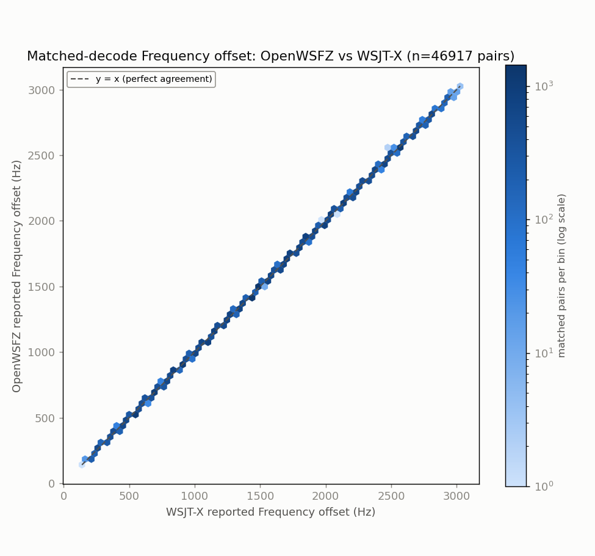
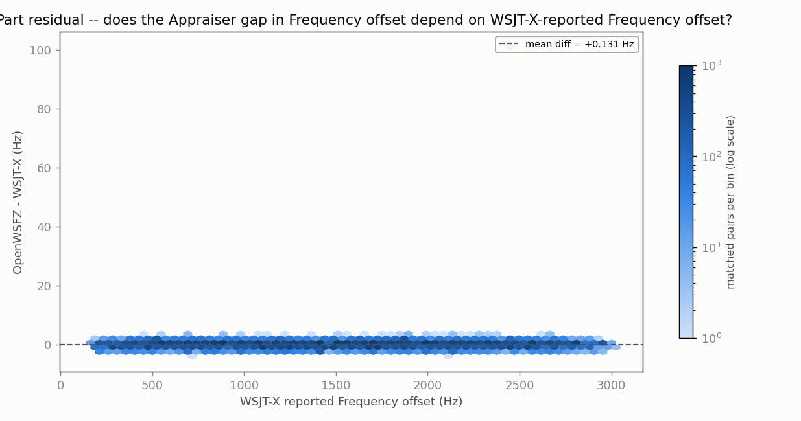
| Source | SS | df | MS | F | P |
|---|---|---|---|---|---|
| Part | 47212193501.9566 | 46916 | 1006313.2727 | 1386060.930 | 0.0000 |
| Appraiser | 403.8657 | 1 | 403.8657 | 556.271 | 0.0000 |
| Residual (confounded with interaction, n=1/cell) | 34062.1343 | 46916 | 0.7260 | ||
| Total | 47212227967.9566 | 93833 |
Appraiser means (Frequency offset, Hz): OpenWSFZ 1524.5 Hz, WSJT-X 1524.4 Hz, grand mean 1524.4 Hz.
With one observation per Part x Appraiser cell -- a live signal happens once -- the interaction term and the residual/error term are mathematically confounded (standard property of an unreplicated factorial design), for every response above. Each table can say whether the two appraisers' mean value differs after removing part-to-part variation (the Appraiser row); none of them can separately test whether that difference itself varies signal-to-signal. Cross-run comparison and interpretation of these numbers is Architect/Captain territory, not this module's -- except Section 4 below, which is the one pre-committed exception (see its own note).
Three comparable rows now exist (live WSJT-X reference, 40m, nhard=40, same build family). Full historical table (all 15 rows back to 2026-07-28): anova_report.md Section 4.
| Date | Hours | Radio chain | Matched % of ref | OWS-only % | SNR gap (dB) | DT gap (s) |
|---|---|---|---|---|---|---|
| 2026-09-22 | 12.0 | Yaesu FT-991A -> Voicemeeter Out B1 | 59.8 | 0.8 | -2.824 | +0.6548 |
| 2026-09-23/24 | 24.0 | FT-991A -> USB Audio CODEC, direct | 61.1 | 0.7 | -3.225 | +0.6484 |
| 2026-09-25/26 (this run) | 12.0 | FT-991A -> USB Audio CODEC, direct | 60.9 | 0.6 | -2.638 | +0.6511 |
This is the decisive comparison, not another data point to flag. Re-running the exact 3 dB WSJT-X-SNR-bin decomposition the standing note called for (snr_gap_mix_3leg.py, this directory; full output snr_gap_mix_3leg_output.txt):
2026-09-22 -> 2026-09-23 (the original observation, B1 -> direct-CODEC): within-bin move -0.28 dB. Reproduces the Architect's original finding exactly.2026-09-23 -> 2026-09-25 (same chain, direct-CODEC -> direct-CODEC, different night -- this run vs the prior direct-CODEC leg): within-bin move +0.35 dB -- larger in magnitude than the original effect, and the opposite sign.Reading it: if the direct-CODEC chain itself produced a stable SNR-reporting shift, repeating that same chain on a different night should reproduce a within-bin move close to zero relative to the other direct-CODEC night. It moved further, and backward, instead. The originally-flagged 0.28 dB effect is smaller than ordinary night-to-night variance on the same chain (0.35 dB) -- it is not distinguishable from noise. No stable direct-CODEC SNR-gap effect is supported by this data. DT gap, matched %, and OWS-only % all continue to sit within the range already established by the first two rows -- no material movement there either, consistent across all three rows.
(This section is the one pre-committed exception to Section 3's "Architect/Captain territory" caveat: the standing note itself said this exact decomposition would be the deciding read, so reporting its outcome mechanically is not new interpretation.)
spectrum_scan.py/spectrum_scan_report.py/render_dossier.py, plus an anova_common.py extension with an automated qa/endurance/history/*.meta.json Section-4 scanner) existed only on an unpushed local branch (qa/live-gap-map) before this session fetched and used it. render_dossier.py also had a real bug, fixed in the same pass: it referenced img/*.png in its output HTML but never created or populated that directory -- broken on every dossier it ever produced, including the 2026-09-23 one, until fixed here. See BOARD.md for the full housekeeping note.anova_report.md / .html -- the source this Section 3/4 content was copied from verbatim (kept as the standalone, script-generated original)anova_report_{snr,dt,freq_hz}_{scatter,residual}.png -- the 6 ANOVA charts, embedded abovesnr_gap_mix_3leg.py / snr_gap_mix_3leg_output.txt -- the 3-leg WSJT-X-SNR-bin decomposition behind Section 4's ruling (gitignored, NFR-021 -- aggregates only, no message text)spectrum_scan.py / spectrum_scan_report.py -- the anomaly-scan scripts (full corpus, no subsampling)spectrum_scan.json / findings.json -- the scan's full results and the mechanical spur/hum verdictsspectrum_scan_level_timeseries.png, spectrum_scan_hum_timeseries.png, spectrum_scan_spur_histogram.png, spectrum_scan_example_spectrum.png, spectral_trace.png -- the spectral charts, embedded aboveFINAL_REPORT_dossier.html -- an auto-rendered alternate view of Sections 1-3 + 5 (recomputed directly from the decode logs) and the full 15-row historical table; does not carry Section 4's hand-written ruling narrative -- this document (FINAL_REPORT.md/.html) is the complete, self-contained oneowsfz/, wsjt-x/ -- gathered decode logs and WAVs